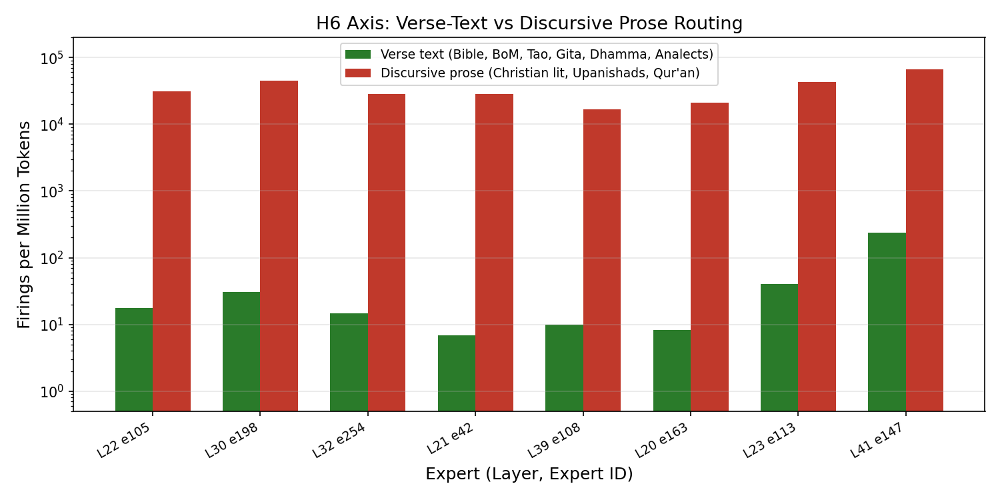

Does DeepSeek-V4 route by religion?
full_obs.jsonl and christian_obs.jsonl raw data, and cross-checked against the Claude Opus 5 external review.1. The question we started with
We wanted to know whether a Mixture-of-Experts language model routes religious texts differently depending on the tradition. Does the KJV activate a different set of experts than the Qur'an? Does Buddhist scripture light up different circuits than the Tao Te Ching?
2. The answer
The path from the initial excitement through the retractions to what actually holds is below.
3. Finding 1: The digit detector (confirmed, retracted as religion claim)
Our first headline: expert e164 at layer 42 fires exactly zero times across all 1.05M KJV tokens, while firing heavily on every other corpus. We interpreted this as evidence that the model treats scripture differently.
Within the Christian corpus alone (1,267 records, same genre, digit density varying naturally), digit-token fraction explains R²=0.77 of e164's per-record firing rate. The lowest-digit decile fires at 31/M against a corpus mean of 4,552/M. The cluster is larger than we thought: 54 experts have within-Christian digit R² > 0.5; 184 have R² > 0.3. e68, which we had grouped with e164, is not in the cluster (R²=0.01).
Status: Confirmed as digit detector. Retracted as religion finding.
4. Finding 2: The verse-vs-prose axis (the real finding)
While screening for digit artifacts, the external review discovered a large population of experts whose firing is digit-independent (R²=0.00–0.15), length-independent (Book of Mormon has 16,384-token windows, same as Christian literature, yet fires ~0), and splits the corpora as bare verse-text vs. discursive prose, cutting across all religious traditions:

| Layer | Expert | Bible | BoM | Qur'an | Tao | Gita | Dhamma | Analects | Upanishads | Christian |
|---|---|---|---|---|---|---|---|---|---|---|
| L22 | e105 | 0 | 109 | 6,611 | 237 | 29 | 46 | 0 | 32,053 | 33,138 |
| L30 | e198 | 4 | 81 | 3,816 | 349 | 103 | 71 | 137 | 28,393 | 48,601 |
| L32 | e254 | 0 | 11 | 7,192 | 241 | 0 | 0 | 0 | 37,061 | 30,346 |
| L23 | e113 | 7 | 223 | 13,151 | 465 | 134 | 0 | 0 | 38,941 | 45,129 |
| L41 | e147 | 13 | 13 | 14,284 | 3,586 | 155 | 523 | 92 | 108,075 | 71,716 |
All values firings per million tokens, recomputed from full_obs.jsonl + christian_obs.jsonl.
These rates are 1,000× larger than the e164 digit effect. The verse group: Bible, BoM, Tao, Gita, Dhammapada, Analects ≈ 0. The prose group: Christian literature, Upanishads, Rodwell Qur'an high. This groups the KJV with the Tao Te Ching and the Book of Mormon on one side, and Puritan commentary with the Upanishads and the Rodwell Qur'an on the other. The obvious reading is bare verse-text vs. discursive prose with editorial apparatus.
5. Finding 3: No religion-organized backbone
L42 top-20 expert overlap (Jaccard): bible–bofm 0.539, bible–quran 0.525, bofm–quran 0.544. If religion were a routing category, Abrahamic pairs would sit above Abrahamic–Dharmic pairs. They don't. The backbone is real (within-corpus 18–20/20, between-corpus 10–17/20) but its structure is not religious — likely a language backbone, not a scripture backbone.
The Jacobian sensitivity probe says the same: across all 8 traditions, L0 norms are 1,015–1,388 and L42 norms are 221–531. A ±10% spread with n=11 each. No tradition signal.
Status: Confirmed as null result. The model has no measurable religion-specific routing.
6. Finding 4: Prediction emerges late and sharply

This is the cleanest result in the study. Aggregate top-1 agreement between the layer-ℓ lens readout and the actual next token, over all 5,282 position-records from 83 records:
| Layer | Agreement | Notes |
|---|---|---|
| L0–L18 | 1.0–1.5% | Flat — lens produces nonsense at these depths |
| L19 | 2.8% | Discrete step — something switches on |
| L30 | 4.1% | |
| L34 | 8.1% | |
| L37 | 24.3% | |
| L39 | 44.2% | |
| L40 | 52.2% | |
| L41 | 62.2% | |
| L42 | 87.4% | Top-5: 96.0% |
Per corpus at L42: Bible 96.8%, BoM 92.9%, Analects 92.3%, Dhammapada 89.6%, Gita 86.2%, Tao 83.1%, Qur'an 75.1%, Upanishads 62.0%. The ordering tracks text regularity, not religion.
' Spirit' at 0.767 for one Bible position,
but the model's actual L42 output there is '.' at 0.917. The lens top-1 agreement
curve is valid because it measures rank agreement, not probability calibration.Status: Confirmed. The cleanest result in the study.
7. Retraction: Routing concentration ≠ predictability
Bible windows are ~825 tokens; Christian windows are 16,384. Effective expert count is an entropy statistic that grows with sample size. At matched draw budget, Bible and Christian are within ~2 units. The 65 vs 111 gap was between-document heterogeneity (1,267 books vs one book).
Against matched-budget effective expert count, the correlation with lens-measured predictability is positive (Pearson +0.47). H3 predicted negative. Drop the surprisal framing; call it what it measures: routing concentration.
8. What we got wrong (the integrity chain)
8.1 The corrupt robustness file
analysis/robustness_checks.txt reported "L34 e33: bible 2.7/M" — a 1,600×
gap. Recomputed: L34 e33 fires at 9,670/M on the Bible, 2× higher than Dhammapada,
in the opposite direction. The Bible figure specifically was corrupt. File regenerated from
scratch from raw data on 2026-08-15.
8.2 The "Qur'an specialist" that wasn't
L41 e34 was claimed as a Qur'an specialist. It is a digit expert (within-Christian R²=0.72). Dhammapada fires it at 26,631/M, 5× the Qur'an's 5,888/M. It was never about the Qur'an.
8.3 The "Jacobian" is misnamed
The probe adds the same projection vector at every position — a uniform-shift sensitivity, not a Jacobian. Renamed in code comments; results stand but the label was wrong.
8.4 The L0 Jacobian artifact
L0 sensitivity is inflated because ε=0.01 is a fixed absolute perturbation and residual norms at L0 are much smaller. The honest headline: "no tradition effect" (±10% across 8 traditions).
9. Agreed hypotheses
Six hypotheses survived verification against raw data and external review:
| # | Hypothesis | Status |
|---|---|---|
| H1 | e164, e27, e34 and ~54 others are digit-density experts (within-Christian R² ≥ 0.5) | confirmed |
| H2/H6 | Large digit-independent, length-independent routing axis separating verse-text from discursive prose (L4–L41; up to 90,595/M vs ~0) | verified, identity open |
| H3 | Routing concentration is a predictability proxy | retracted (sign backwards, length artifact) |
| H4 | Shared routing backbone across all 9 corpora, not religion-organized | confirmed |
| H5 | No religion-specific routing exists (null hypothesis, currently stands) | stands |
| — | Next-token prediction emerges late: flat to L18, step at L19, 70% after L37 (L42=87.4%) | confirmed |
Not endorsed: any tradition-linked individual expert; anything from intermediate-layer lens probabilities; any Jacobian claim before ε-normalization; anything from the theology corpus as currently designed.
10. Experiments, ranked by decisiveness
- Exp 4 (quotation switch) — retargeted to H6 cluster. Christian books quoting the KJV verbatim: same document, same window, same digit density. If L22 e105 / L30 e198 / L41 e147 switch off inside quotation spans, H6 is proven with zero cross-corpus confound. best figure
- Exp 1 (multi-translation). 5 translations at 0.000% digits. BBE vs KJV is the register contrast. Run the H6 cluster on it. staged
- Exp 3 (secular null) — redesigned. Must include secular verse (Milton, Wordsworth). If secular verse lands on the Bible side, religion is entirely out. redesign needed
- Exp 11 (context dump) — retargeted. Dump L22 e105, L30 e198, L41 e147. Drop e164/e27. staged
- Exp 12 (digit minimal pairs). Sub-hour. Published negative control. staged
- Residual-norm-normalized Jacobian re-run. Mandatory before any Jacobian claim ships.
- Covariate regression. No GPU. Add punctuation%, sentence length, TTR, verse/prose indicator.
- ADD: ablation. Zero the H6 cluster, measure Δloss on KJV vs. Christian prose. Causal claim → result. needs read-only scope change